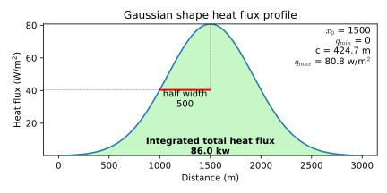
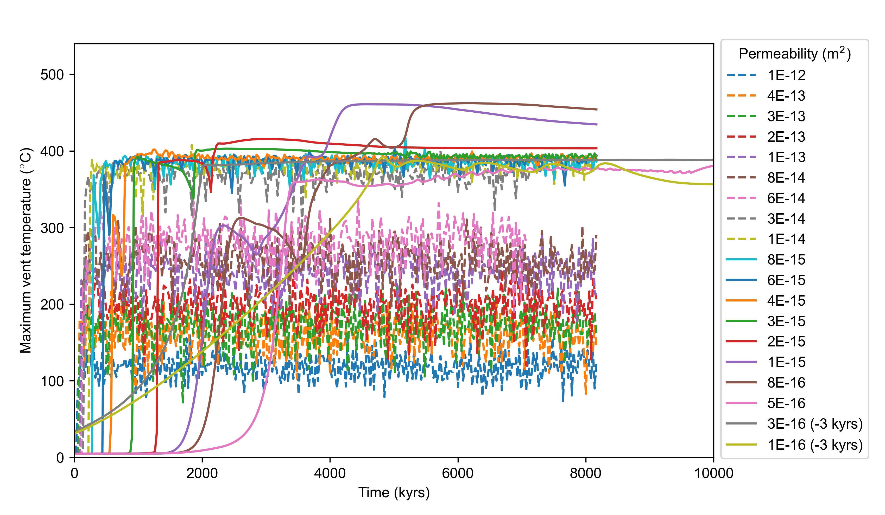
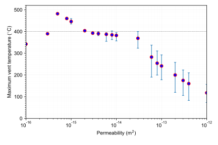

Exercise 3
Warning
This section is under construction!
We will now try to reproduce the results presented by [Driesner, 2010b], the case files Driesner2010.
The magma heat source is simulated by a heat flux boundary condition, which can be set by customized boundary condition type of hydrothermalHeatFlux (see doc ).
The model in [Driesner, 2010b] is 1 m thick, 3 km wide, 1 km height, the heat source is simulated by a Gaussian-shaped heat flux profile with total heat input 86 km, half-width 500 m and center 1500 m.
Let’s see how to set this boundary condition in HydrothermalFoam.
hydrothermalHeatFlux supports Gaussian-shape (shape gaussian2d;) distribution and the shape is defined by four parameters x0, qmax, qmin, c, the equation of the shape is
for a normal Gaussian-shape profile in this model, qmin is set to zero and x0 is set to 1500.
From equation equation (26), we can get the half-width and total heat flux (approximately) are \(c\sqrt{2ln2}\) and \((q_{max}-q_{min})\sqrt{2\pi}c\), respectively. According to the model setup, it’s easy to get \(c = \frac{500}{\sqrt{2ln2}} = 424.661\) and \(q_{max} = \frac{86}{c\sqrt{2\pi}} = 0.0808\ kw/m^2\).
There the temperature boundary condition at the bottom patch can be set as,
bottom
{
type hydrothermalHeatFlux;
q uniform 0.05; //placeholder
value uniform 0; //placeholder
shape gaussian2d;
x0 1500;
qmax 80.8;
qmin 0;
c 424.661;
}
(Source code, svg, pdf)
{kind=link}


